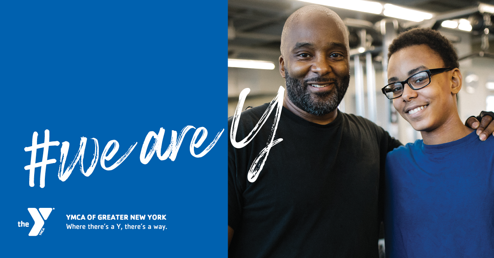
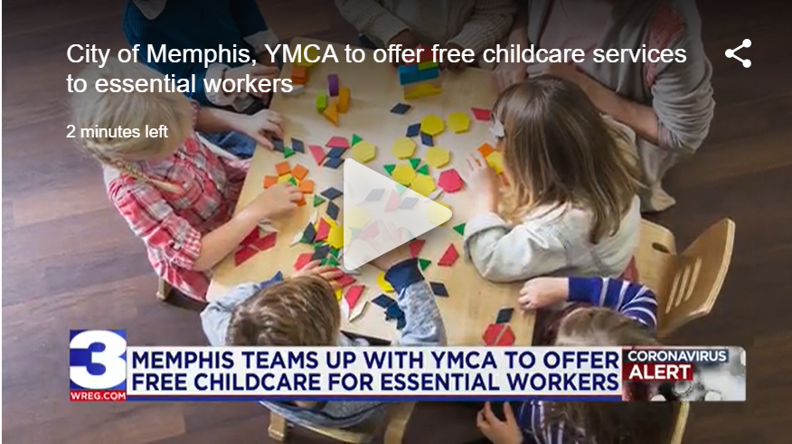

The YMCA of Greater New York Launches First Ever Brand Campaign
NEW YORK, Jan. 2, 2020 /PRNewswire/ -- The YMCA of Greater New York today announced the launch of its first-ever brand campaign called "#WeAreY." Launched December 26, 2019, the 360-degree, integrated campaign projects a joyful celebration of individual and community achievement, while also representing the energetic and vibrant culture of the modern YMCA of Greater New York. "We are thrilled to launch this new brand campaign that celebrates how the YMCA is here for all New Yorkers — to empower youth, improve health, and strengthen community," said Sharon Greenberger, President & CEO of the YMCA of Greater New York. "Every year the Y helps half a million New Yorkers achieve their goals and reach their full potential. This campaign showcases that impact across our 22 branches and highlights how the Y empowers our communities to learn, grow, and thrive."
YMCA Launches Free Online Classes
CHICAGO, March 19, 2020 /PRNewswire/ -- Since its founding in 1844, the Y has been there to help communities through whatever challenge they were facing. Through the Great Depression, wars and natural disasters, the Y has been there. And while COVID-19, is a challenge unlike any other, the Y is still there, working to provide services and community, even as YMCAs throughout the country have had to temporarily close their doors. A new, online community program—YMCA 360—allows participants to stay connected and active, even when they can't visit the Y. The program will be accessible to both YMCA members as well as the general public for the foreseeable future. The free on-demand programs available on YMCA360.org include some of the Y's most popular group exercise classes like Boot Camp, Barre, Yoga and low impact programs for seniors. Each class is led by a YMCA instructor and reflects the same great programming people already expect from the Y – except these classes will be from the comfort of their own homes! The Y plans to release more exercise classes for adults as well as youth activities and classes throughout March and April. Read more....
YMCA Of Austin Begins Free Summer Meals Distribution For Kids
The Central TX Food Bank and the YMCA of Austin have partnered to offer meal packets to kids ages 18 and under on Thursdays through August.
YMCA of Austin Free Meals for Kids Distribution Each Thursday from June 18 - Aug. 13 (Shutterstock) AUSTIN, TX —The Central Texas Food Bank, in partnership with the YMCA of Austin, will begin a free meals distribution program on Thursday, June 18 for children ages 18 years and under each Thursday through August 13. Parents/caregivers may drive up or walk up to receive their child's meal packs which include seven breakfasts (whole grain item, fruit, milk per day) and seven lunches (frozen lunch trays and milk per day).
'Take Care Of Texas' Kids' Art Contest Is Launched
The contest encourages kids from kindergarten through 5th grade to learn how they can help protect the state's environment.
Art contest encourages kids from kindergarten through 5th grade to learn how they can help protect the state's environment. (Shutterstock ) AUSTIN, TX — Kids, get out your crayons, for today is the first day of the Take Care of Texas Kids' Art Contest. Now in its 6th year, the contest encourages kids from kindergarten through 5th grade to learn how they can help protect the state's environment while sharing that knowledge with others, Texas Commission on Environmental Quality wrote in a press advisory. To enter, students must submit an 8.5-inch by 11-inch piece of artwork demonstrating ways to keep the water and air clean, save water or energy, or reduce waste. Each entry must contain the slogan "Take Care of Texas. It's the only one we've got." Each of TCEQ's 16 regional offices will select a winner. One grand prize winner will receive a laptop—and 15 students will win a tablet. The teacher of the student who designs the overall best artwork will also receive a tablet. Prizes are made possible through a donation from the Texas Chemical Council.
City of Memphis, YMCA to offer free childcare services to essential workers
MEMPHIS, Tenn. – The City of Memphis is partnering with the YMCA to offer free childcare for children over five years old to essential workers at all community centers. They are starting with eight community centers and will then slowly phase in the others, offering free childcare at 23 community centers in all.The City of Memphis and the YMCA will start offering free childcare services at eight community centers before expanding the list. “As more businesses are opening back up and more are going back to work, I know many of you are concerned about childcare,” said Mayor Jim Strickland. Jerry Martin is the CEO and President of the YMCA of Memphis and the Mid-south. He says they already have been providing childcare programs and serving 700 kids. “We recognize that essential workers need childcare in a safe, supportive environment,” Martin said. “We put additional safety procedures under the guidance of the CDC and health department.” Martin says that includes health screenings and additional cleaning throughout the day. He says nine kids will be assigned to one counselor, and their group will not mingle with others. “In terms of health and safety, we will eliminate field trip programs and pool visits for the most part. It will look very different than our summer camp model has in the past,” Martin said. To qualify, parents must be a Tennessee resident and be considered an essential worker under the governor’s order. You can click this link to find out if you qualify for free childcare. You can click here to sign up for free childcare.